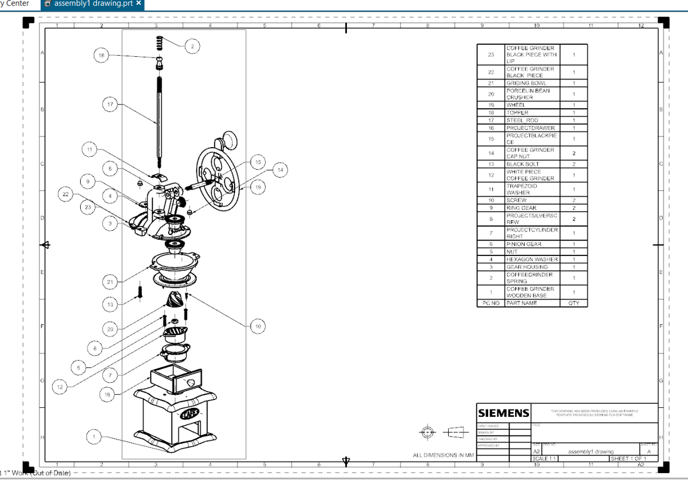

Level 1 Rocket
As a part of the UC rocketry club, I desgined a L1 rocket from scratch with the guidence of my mentor, Landry Danielson. I used a I-161 motor and it went approximately 2500 feet in the air. It used a single deploy recovery system and a statologer for the computer. I also had to design parts for the electronics bay via CAD.
ENED Project Semester 1
My team and I were assigned to pick a population, find something that they needed, then solve that problem. We chose a population in Etheopia. We then stepped through the engineering process to solve their money and food struggle. We made a system that could produce food and fertilizer that they could eat and sell. The system would start by putting human and plant waste into an anaerobic digester which would break down into a fertilizer. We would attach the fertilizer to a hydroponics system which would produce plants to eat. Then the plant waste would get recycled into the digester.
ENED Project Semester 2
My team and I were given a problem which was to help people affected by hurricanes clean up and dispose of trash. To replicate this, we were given a lego mindstorm kit and had to build and code a robot that could follow both a solid and dotted path. Once the robot came across a trash bin, it had to determine what the material was by weight and then take it to the unloading site.
Reverse Engineering CAD Project
My team and I were given a task to pick an item that had complex parts, reverse engineer it, then divide the parts up to design them using Siemens NX. My team and I chose a coffee grinder.
